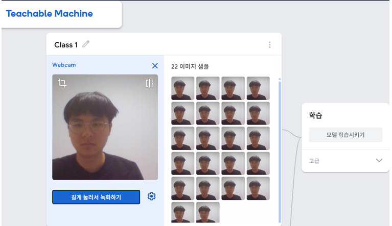
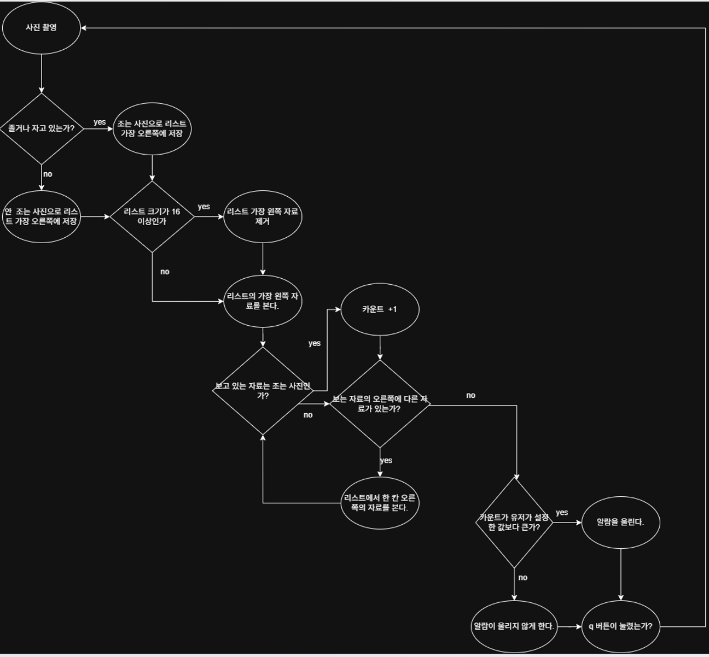
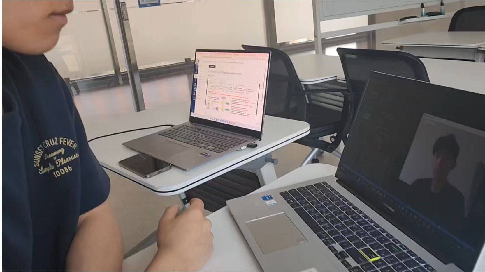

Title & Authors
| Project Title | Alarm Webcam |
|---|---|
| Team Members | Min Dongwan, Kim Donghyun |
| Student ID | 20260147 |
| Course | EF1003 Data Literacy Foundation |
Motivation & Problem Definition
Students often struggle to maintain concentration during long study sessions. We wanted to build a simple system that can detect a drowsy face through a webcam and immediately give an alert.
The main problem was how to distinguish between awake and drowsy facial states in real time and trigger a useful warning only when drowsiness continues.
Dataset
- Webcam images were collected using Teachable Machine.
- Additional data from Kaggle were used to reduce narrow data bias.
- The model classified images into two classes: Awake and Drowsy.

Figure 1. Data collection using Teachable Machine.
Methods
- A classification model exported from Teachable Machine was loaded in Python.
- Each webcam frame was resized to 224 × 224 and normalized before prediction.
- Recent prediction states were stored in a short list.
- An alarm was triggered when drowsy states exceeded a user-defined threshold.
System Workflow
The workflow below summarizes the logic of the Alarm Webcam system.

Figure 2. Workflow from webcam capture to alarm triggering.
Experiments & Results
The project successfully implemented a real-time alert prototype. When the model repeatedly classified the user as drowsy, the program displayed a warning text and triggered alarm audio playback.
| Component | Result |
|---|---|
| Live webcam classification | Implemented |
| Drowsy-state counting | Implemented with recent-state list |
| Alert message | "WAKE UP!" displayed on screen |
| Alarm sound | Triggered after threshold condition |

Figure 3. Demonstration of the Alarm Webcam system.
Discussion
- Mislabeled training images initially reduced model performance.
- The team manually reviewed about 700 images to fix labeling errors.
- Kaggle data helped reduce the bias of a narrow webcam-only dataset.
- The threshold logic was revised to improve actual usability.
Applications & Future Work
- Study assistant for detecting concentration loss and drowsiness.
- Basic fatigue-monitoring prototype using a common webcam.
- Future work includes improving robustness for different people, lighting, and camera distance.
- Distance-aware face handling can reduce false drowsy classification.
References & Acknowledgement
- Teachable Machine for image classification training
- Kaggle for supplementary image data
- Python libraries: OpenCV, NumPy, TensorFlow, Pygame, threading, and time